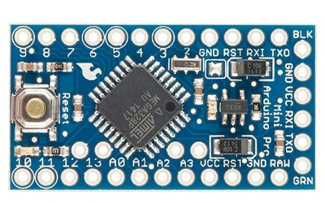

{kind=link}

The Arduino Nano and Arduino Pro-Mini cheap yet well known candidates for building your own sensors. However, the reference implementations of LoRa stack for the RFM95 do not fit in the memory (yet). Most importantly because the AES encryption modules use huge amounts of memory in these stacks. Of course it is possible to fit these stuctures in program memory but still we are short of memory let alone that we could run some own code supporting our own physical sensors.
Ideetron (http://www.ideetron.nl) has published a simplified version of the LoRa sensor that will run on an Arduino 328-based system. As the LoRa example code of IBM does in its published form not fit in a normal Arduino (328) they left functions out such as multi-channel. They made a dedicated package and call it "LoRa Nexus", and published the software as an example on github. The link to the sketch code can be found on their website.
It is possible to use their code as a starting point for your own LoRa node + sensor.
This page describes how to build you own node based on Arduino Pro-Mini MCU and the modified software of Ideetron.
So let's make our own mini node based on a cheap Arduino Pro-Mini MCU ($ 2.00 on Aliexpress), a HopeRF95, a HTU21d temperature/humidity sensor ($4.00) and some resistors. Based on the LoRaWAN software and library sketches it should be possible to make your own "Thing".
And the Arduino Pro-Mini looks like this. It's pin out is clearly marked on the outside of the board (that is, until I start to solder pin's to it).

In order to operate the Pro-Mini you only need to attach a 3.3Vdc battery to pin's VCC and GND, however for downloading the sketch program you probably also want to solder pins to the 6-pin USB/FTDI interface to the right.
Pin-out for use with an Arduino ProMini:
| Arduino | Arduino Pin | RFM95 | Color |
|---|---|---|---|
RST |
RST | RESET | -- |
| VCC | 3.3V | red | |
| GND | GND | ||
| D4 | 4 | DIO0 | |
| D5 | 5 | DIO1 | |
| D6 | 6 | DIO5 | |
| D7 | 7 | DIO2 | |
| D10-SS | 10 | NSS | |
| MOSI | 11 | MOSI | |
| MISO | 12 | MISO | |
| CLK | 13 | SCK |
As you can see in the picture of the Arduino ProMini below (actual boards might differ a bit) we need pins at both sides of the board so left of right orientation of the RFM95 is less important.
There are special adapter cards and boards available for tge RFM95w, but if we would wire and solder connections we need 10 wires.
I soldered some jumpers (cut in half) to the RFM95 board to be able to test and experiment with the setup.
I left enough wire to make connection to the breadboard simple. But it looks like **** and it did not take much time before I decided to cut the wires really short and solder them directly to an Arduino Pro-Mini.
As you can see, it is possible to make a real small sensor.
If we would like to make a simple node that can report temperature and humidity and runs on normal batteries we need to do some special tings as well:
Please read on Page 2 how to transform the node to a sensor
{kind=link}
{kind=link}